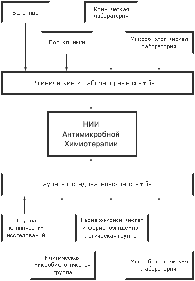

Структура НИИ АХ
НИИАХ
Общие сведения
Структура НИИАХ
Подготовка сотрудников
Клиническая и лабораторная база
Микробиология
О Смоленске
НИИАХ
/ Структура
Структура НИИ aнтимикробной xимиотерапии

Последнее обновление: 30.07.2004
2003 © Антибиотики и антимикробная терапия
http://antibiotic.ru/